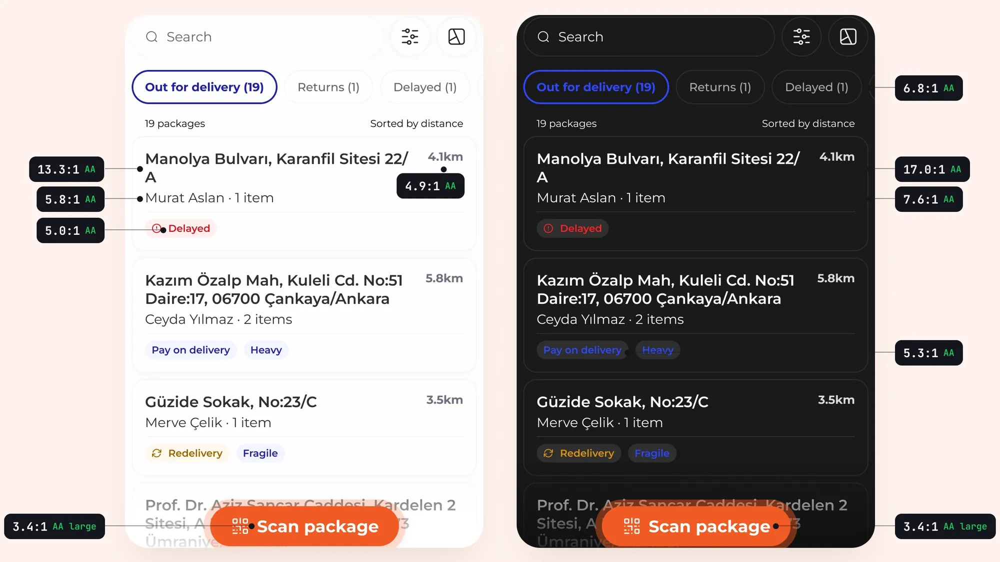
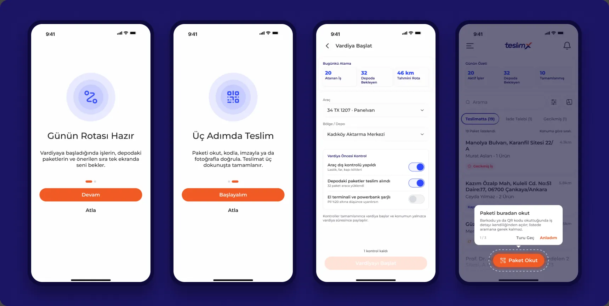
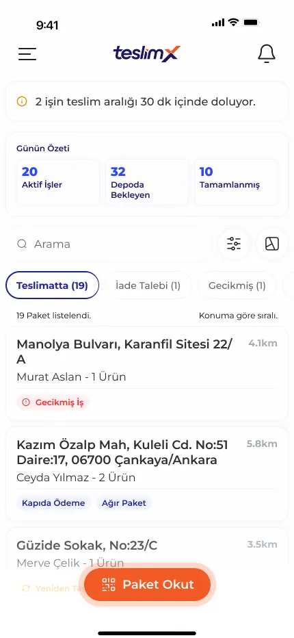
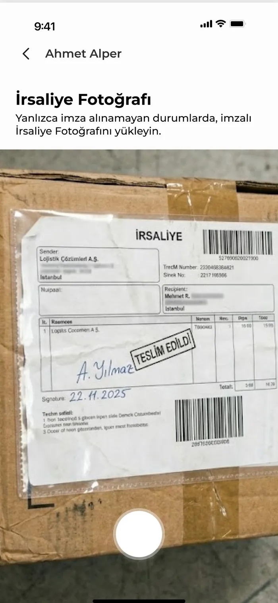
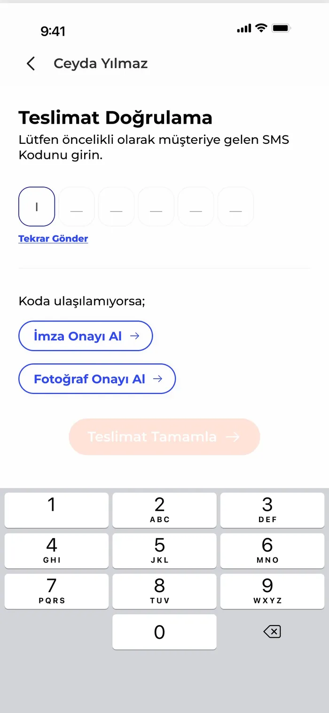
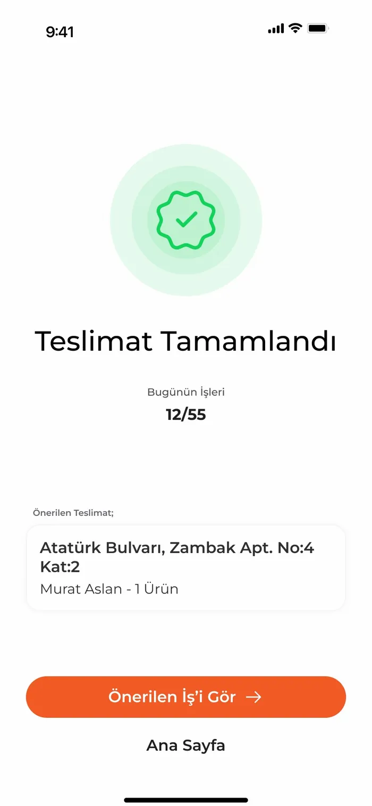
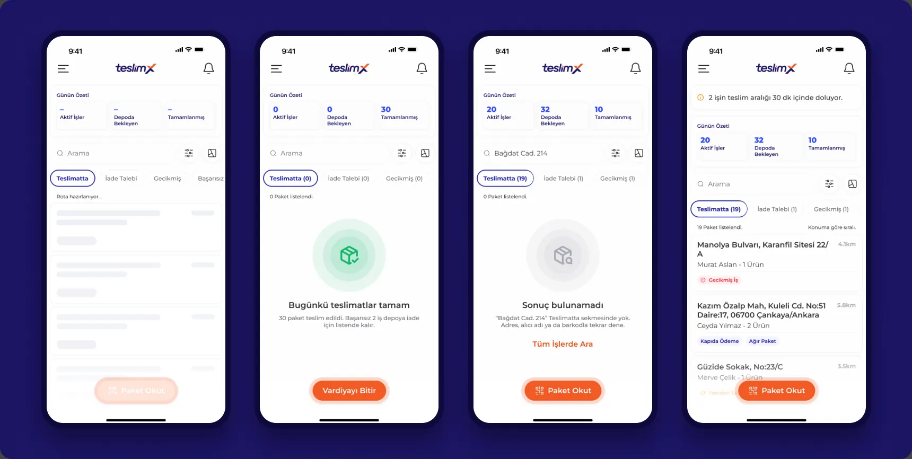
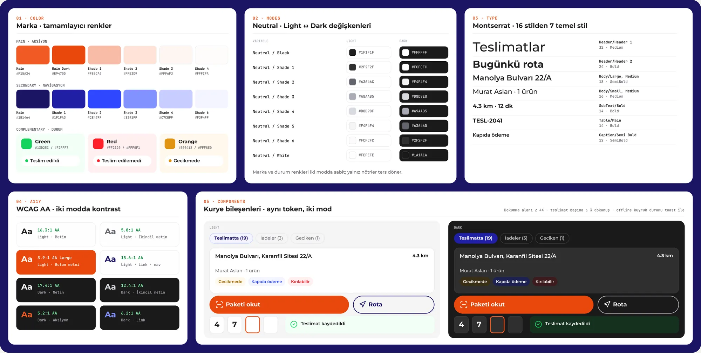

One thumb. Bad signal. Direct sunlight.
Couriers were running daily routes of 20–100 packages out of fragmented Excel sheets and a dashboard never meant for phones. I designed the app that replaced all of it — from a raw PRD to a dev-ready library in one month.

Any delivery flow in three taps, primary actions in the bottom third for one-handed use.
Light and dark audited against WCAG AA — measured, failed, fixed.
Raw PRD to a dev-ready component library in one month.
The brief wasn't an app, it was ergonomics
A courier holds a phone in one hand and a parcel in the other, in a moving vehicle, in glare, sometimes with no signal at all. Every requirement in the PRD had to survive that.
So the PRD was read through that lens first and turned into flows: what a courier needs at the start of a shift, what has to be readable at a glance, and which actions repeat all day.

Three taps, enforced as a business rule
A courier completes any delivery flow in at most three taps, enforced from the wireframes on. Every flow was drawn out in detail and tested against the rule; anything that wouldn't fit was rethought at the flow stage, not argued about at the UI stage. The camera scan between tap one and tap two is automatic, which is part of why the count works.
Tap count stopped being a design aspiration and became a rule the PRD had to obey.




TAP
1
2
3
/ 3
start to done.
Three taps.
Designing for glare and for 2am
Light and dark were designed in parallel, because a courier switches between them inside one shift. They run on the same tokens: brand and status colours hold in both modes and only the neutrals invert. Touch targets are at least 44 px, primary actions sit in the bottom third, and offline queue state surfaces as a toast rather than a blocking dialog.
Then I measured instead of claiming. Secondary distance text, the delayed and redelivery tags and the blues on the dark background failed on test and were corrected to pass AA; the orange primary button passes as large text and is described that way.

Finish the delivery now, reconcile later
The app had to keep working in a basement, a lift or a dead zone on the ring road, so data syncs around the courier rather than the courier waiting for the data. Getting there meant a long run of conversations with the PM and developers: which screens work with no connection, what is held on the device, how delivery codes and QR confirmation behave when nothing can be checked against a server.
A courier should never have to wonder whether the delivery they just completed counted.
Why the deadline held
A mobile component library from the ground up — custom icons on a 24 px grid, a scalable type scale, form components specified across default, focus, filled and error in both modes — handed over meeting the accessibility standard before a single ticket was written. Nothing moved to UI until the wireframes were agreed, and every edge case we could name was named while it was still cheap to change.

Replaced spreadsheets with something that survives the road.
Couriers who had been reconciling 20–100 packages a day across spreadsheets now work from a single list that survives a dead zone and syncs when the signal returns. Manual entry is gone.